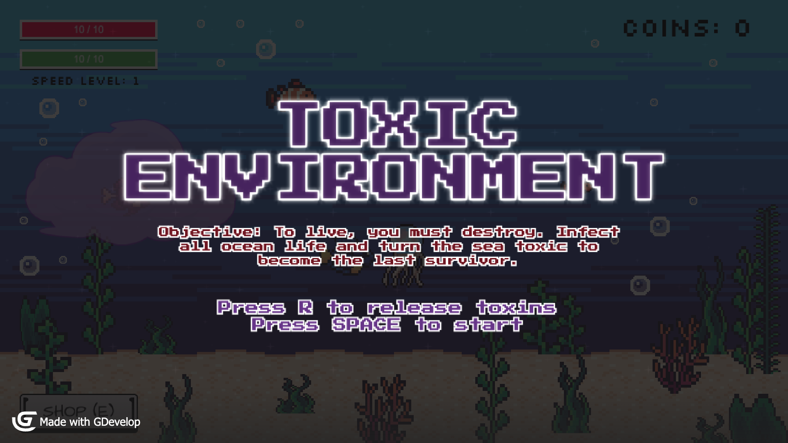

Toxic Environment
The collapse of an ecosystem caused by one creature’s need to survive


- Genre
- 2D Survival Platformer
- Tools
- GDevelop
- Team
- 2-person project (with Alexander Flores)
- Role
- Gameplay Programmer, Designer, Playtester
overview
Toxic Environment explores the collapse of an ecosystem driven by one creature's need for survival. Players control a toxic fish that spreads pollution through clean bodies of water to stay alive, gradually transforming the environment while balancing survival needs.
gameplay video
design process
1. Prototype/Initial Ideas


3. Playtesting & changes

what i did
what i learned